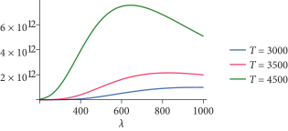
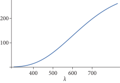
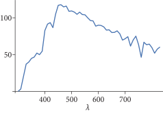
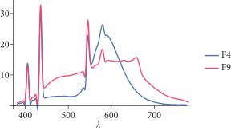

4.4 光的发射（Light Emission）
温度高于绝对零度的物体，其原子都是在运动的。相应地，正如麦克斯韦方程所描述的，带有电荷的原子粒子的运动会导致物体在一系列波长范围内发出电磁辐射。正如我们即将看到的，在室温下，大部分的发射都是红外频率（infrared frequencies）的；物体需要更高的温度才能在可见频率（visible frequencies）下发射出有意义的电磁辐射。
人们已经发明了许多不同类型的光源来将能量转换为发射的电磁辐射。发出光的物体称为 灯（lamp） 或 光源（illuminant），然而我们避免使用后者的术语，因为我们一般用“光源”来指代一种发射的光谱分布（第 4.4.2 节）。灯被装在 灯具（luminaire） 中，灯具由所有支撑和保护光的物体以及任何用于塑造光分布的物体如反射器（reflectors）或扩散器（diffusers）组成。
理解一些涉及发射的物理过程有助于准确地为渲染建模光源。目前有多种相应类型的灯被广泛使用：
- 白炽灯（钨丝灯）（Incandescent (tungsten) lamps）具有一个小的钨丝灯丝。电流通过灯丝会加热它，从而导致其发出电磁辐射，辐射的波长分布取决于灯丝的温度。通常会有一个磨砂玻璃外壳，以便将发射的光扩散到比灯丝更大的区域，并吸收一些生成的波长，以实现所需的波长发射分布。在白炽灯中，发射的大部分功率都在红外波段，这意味着灯消耗的大部分能量都转化为热量而非光。
- 卤素灯（Halogen lamps）也有一个钨丝灯丝，但其周围的外壳充满了卤素气体。随着时间的推移，白炽灯中的一部分灯丝在加热时会蒸发；卤素气体使得蒸发的钨重新回到灯丝上，从而延长了灯的寿命。由于蒸发的钨返回到灯丝上，它不会附着在灯泡表面（如普通白炽灯泡那样），这也防止了灯泡变暗。
- 气体放电灯（Gas-discharge lamps）通过氢气、氖气、氩气或气化金属气体传递电流，这导致在特定波长下发出光，这些波长取决于气体中的特定原子。（选择那些在无用的红外频率中发射相对较少电磁辐射的原子作为气体。）由于更广泛的波长光谱通常比起所选原子直接产生的波长在视觉上更具吸引力，因此灯泡内部通常使用荧光涂层将发出的波长转化为更广泛的范围。（荧光涂层还通过将紫外波长转化为可见波长来提高效率。）
- LED 灯基于电致发光（electroluminescence）：它们使用在电流通过时发射光子的材料。
对于所有这些光源，其基础的物理过程是电子与原子碰撞，这使得原子的外层电子被推向更高的能级（energy level）。当这样的电子返回到较低的能级时，会发射出一个光子。还有许多其他有趣的过程可以产生光，包括化学发光（chemoluminescence）（如在荧光棒中看到的）和生物发光（bioluminescence）——一种在萤火虫中看到的化学发光形式。尽管这些过程本身很有趣，但我们在这里将不再进一步讨论它们的机制。
光视效能（Luminous efficacy）（光效） 衡量光源将功率转化为可见光照的效率，考虑到对于人类观察者而言，非可见波长的发射几乎没有价值。有趣的是，它是一个光度量（发射的光通量）与一个辐射量（光源使用的总功率或它在所有波长上发射的总功率，以辐射通量计）的比值。
\[
\frac{\int\Phi_\text{e}(\lambda)V(\lambda)\text{d}\lambda}{\int\Phi_\text{i}(\lambda)\text{d}\lambda}
\]
其中 \( V(\lambda) \) 是在第 4.1.4 节中介绍的光谱响应曲线。
光效的单位是流明每瓦。如果 \( \Phi_\text{i} \) 是光源消耗的功率（而不是发出的功率），那么光效还包含了光源将功率转换为电磁辐射的效率衡量。光效还可以定义为物体表面某一点的光出射度（luminous exitance）（辐射出射度的光度学等价物）与辐照度的比值，或者是某一特定方向上表面某一点的发射亮度（exitant luminance）与辐射亮度之比。
对于白炽钨丝灯泡，典型的光效值约为 \( 15 \text{lm/W} \)。它可能达到的最高值为 683，这是对于一个完美高效的光源，该光源在 \( \lambda = 555 \text{nm} \) 处发出所有光线，即 \( V(\lambda) \) 函数的峰值。（尽管这样的光源会有很高的光效，但就人类观察者而言，它发出的光不一定会令人愉快。）
4.4.1 黑体发射体（Blackbody Emitters）
黑体是一个完美的发射体：它以物理上可能的最高效率将功率转化为电磁辐射。虽然真正的黑体在物理上是无法实现的，但一些发射体表现出接近黑体的行为。黑体还有一个有用的闭合形式表达式，描述其按波长随温度变化的发射量，对于模拟非黑体发射体非常有用。
黑体之所以被称为黑体，是因为它们能够完全吸收所有入射功率，而不反射。从直观上讲，完美吸收体也是完美发射体的原因在于，吸收是发射的逆过程。因此，如果时间被倒转，所有完美吸收的功率将被完美高效地重新发射出来。
普朗克定律（Planck’s law） 给出了黑体所发射的辐射亮度，作为波长 \( \lambda \) 和以开尔文为单位的温度 \( T \) 的函数：
\[
L_\text{e}(\lambda,T) = \frac{2hc^2}{\lambda^5(\text{e}^{hc/\lambda k_b T} - 1)}
\]
其中 \( c \) 是介质中的光速（在真空中为 \( 299,792,458 \text{m/s} \)），\( h \) 是普朗克常数，\( 6.62606957 \times 10^{-34}\ \text{Js} \) ， \( k_b \) 是玻尔兹曼常数，\( 1.3806488 \times 10^{-23}\ \text{J/K} \) ，其中开尔文（K）是温度的单位。黑体发射体是完全漫反射（perfectly diffuse）的；它们在所有方向上均匀发射辐射亮度。
图 4.12 绘制了不同温度下黑体发射的辐射亮度分布。
图 4.12： 绘制了不同温度下黑体发射体的发射辐射亮度随波长变化的曲线，如方程 (4.17) 所示。注意，随着温度的升高，发射的光中可见频率的部分增多（大约 380 nm–780 nm），并且光谱分布从红色逐渐转移到蓝色。发射的总能量随着温度的升高而迅速增加，如方程 (4.19) 中的斯特藩-玻尔兹曼定律所描述。
Blackbody() 函数计算在给定波长 lambda 下，温度为 T（以开尔文为单位）时的发射辐射亮度。
/** Spectrum 函数声明 */
Float Blackbody(Float lambda, Float T) {
if (T <= 0) return 0;
const Float c = 299792458.f;
const Float h = 6.62606957e-34f;
const Float kb = 1.3806488e-23f;
/** 返回黑体在波长 lambda 下发射的辐射亮度 */
Float l = lambda * 1e-9f;
Float Le = (2 * h * c * c) /
(Pow<5>(l) * (FastExp((h * c) / (l * kb * T)) - 1));
return Le;
}
传递给 Blackbody() 的波长单位为纳米（nm），但方程（4.17）的常数单位为米。因此，首先必须将波长乘以 \( 10^{-9} \) 来转换为米。
/** 返回黑体在波长 lambda 下发射的辐射亮度 */
Float l = lambda * 1e-9f;
Float Le = (2 * h * c * c) /
(Pow<5>(l) * (FastExp((h * c) / (l * kb * T)) - 1));
return Le;
基尔霍夫定律（Kirchhoff’s law） 描述了非黑体的发射，该定律指出，在任何频率下，发射的辐射亮度分布等于该频率下绝对黑体（perfect blackbody）的发射量乘以物体在该频率下吸收的入射辐亮度的比例。（这种关系源于假设物体处于热平衡状态。）吸收的辐亮度比例等于1减去反射的量，因此，发射的辐亮度为
\[
L_{\text{e}}'(T,\omega,\lambda)=L_\text{e}(T,\lambda)(1-\rho_\text{hd}(\omega))
\]
其中 \( L_\text{e}(T, \lambda) \) 是由普朗克定律给出的发射辐亮度，方程（4.17），而 \( \rho_\text{hd}(\omega) \) 是来自方程（4.12）的半球-方向反射率。
斯特藩-玻尔兹曼定律（Stefan–Boltzmann law） 给出了黑体发射体在点 \( \text{p} \) 处的辐射出射度（回想一下，这就是出射的辐照度）：
\[
M(\text{p})=\sigma T^4
\]
其中 \( \sigma \) 是斯特藩-玻尔兹曼常数，\( 5.67032 \times 10^{-8} \text{Wm}^{-2}\ \text{K}^{-4} \)。注意，所有频率上的总发射量增长非常迅速——按照 \( T^4 \) 的速率增长。因此，将黑体发射体的温度加倍，会使总发射能量增加 16 倍。
黑体发射分布（blackbody emission distribution）通过 色温（color temperature） 的概念，为描述非黑体发射体的发射特性提供了一个有用的指标。如果发射体的发射光谱分布形状与某一温度下的黑体分布相似，那么我们可以说该发射体具有相应的色温。求出色温的一种方法是取光的发射最强的波长，并使用 维恩位移定律（Wien’s displacement law） 找到相应的温度，该定律给出了在给定温度下黑体发射强度最大时的波长：
\[
\lambda_\max = \frac{b}{T}
\]
其中 \( b \) 是维恩位移常数，\( 2.8977721 \times 10^{-3} \text{m}\ \text{K} \)。
白炽钨丝灯的色温一般约为 2700 K ，而钨卤素灯的色温约为 3000 K 。荧光灯的色温范围可能在 2700 K 到 6500 K。一般来说，色温超过 5000 K 被称为 “冷色”，而 2700–3000 K 被称为 “暖色”。
4.4.2 标准光源（Standard Illuminants）
另一种有效分类光照分布的方法是使用国际照明委员会（Commission Internationale de l’Éclairage）（CIE）定义的一些 “标准光源”。
标准光源 A 于 1931 年引入，旨在表示平均白炽灯光源。它对应于约 \( 2856\text{K} \) 的黑体辐射器（blackbody radiator）。（它最初被定义为 \( 2850\text{K} \) 的黑体，但后来普朗克定律中使用的常数的精确度得到了提升。因此规范被更新为基于 1931 年的常数，以保证光源的性质保持不变。）图 4.13 展示了 A 光源的光谱分布图。
图 4.13：CIE 标准光源 A 的光谱功率分布随波长（以纳米为单位）的变化图。 该光源代表白炽灯光照，接近 \( 2856\text{K} \) 的黑体。
（B 光源 和 C 光源 旨在模拟一天中两个时段的日光，并由 A 光源结合特定滤光片（filters）生成。它们现在已经不再使用。E 光源 被定义为具有恒定的光谱分布，仅用于与其他光源进行比较。）
D 光源 描述了日光的不同阶段。它是基于对多种日光光谱的特征向量分析而定义的，这使得可以用三个项（一个固定项和两个加权项）的线性组合来表达日光，其中一个权重基本上对应于由于多云而导致的黄蓝色变化，另一个则对应于由于大气中的水分（如雾霾等）而导致的粉绿色变化。D65 光源 的色温大约为 \( 6504\text{K} \)（不是 \( 6500\text{K} \) ——同样是由于普朗克定律中常数值的变化导致），旨在表示欧洲地区的正午阳光。（见图 4.14。）CIE 建议在没有特殊原因时，应使用此光源作为日光。
图 4.14：CIE 标准 D65 光源的光谱分布随波长（以纳米为单位）的变化图。 该光源表示欧洲纬度地区的正午日光，并常用于定义色彩空间的白点（参见 4.6.3 节）。
最后，F 系列光源 描述了荧光灯；它是基于对多种实际荧光灯测量而定义的。图 4.15 展示了其中两种的光谱分布。
图 4.15：F4 和 F9 标准光源的光谱分布随波长（以纳米为单位）的变化图。 它们代表了两种荧光灯。请注意，这两种分布差异很大。两种分布中的尖峰对应于气体中原子直接发射的波长，而其他波长则由灯泡的荧光涂层产生。F9 光源是一种 “宽带（broadband）” 发射体，它使用多种荧光粉以实现更均匀的光谱分布。